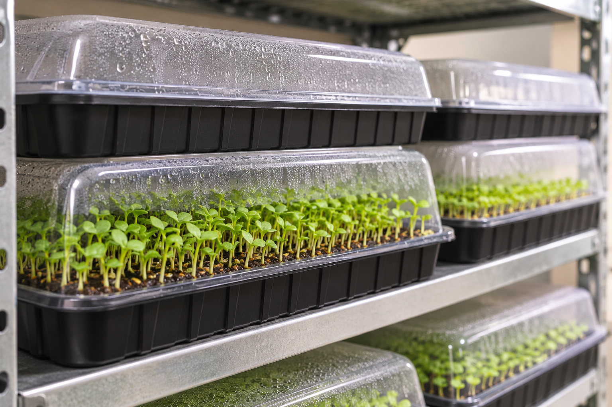

Siembra
Seleccionamos semillas aptas para consumo y preparamos bandejas con sustrato.
Microgreens frescos, cultivados bajo condiciones controladas. Una nueva manera de acercar la naturaleza a tu mesa.
Descubrí los microgreensBrotea nace en San Juan como un proyecto de producción de microgreens, impulsado por la búsqueda de nuevas formas de cultivar alimentos frescos, locales y de calidad.
La idea surge durante la formación en Frutihorticultura, uniendo conocimientos técnicos con el deseo de incorporar una alternativa innovadora a la producción tradicional. Así comienza Brotea – Grow Fresh: una propuesta que busca acercar pequeños brotes llenos de color, textura y sabor a nuestra comunidad.

Pequeños brotes que transforman tus comidas. Descubrí nuevas formas de sumar sabor, color y frescura a tostadas, ensaladas y preparaciones gastronómicas.
Explorá nuestras variedadesExplorá algunas variedades posibles y sus características culinarias.
Variedades ilustrativas, sujetas a selección y disponibilidad productiva.
Cada etapa está pensada para favorecer el desarrollo de plantas jóvenes y mantener la calidad del producto final.
Seleccionamos semillas aptas para consumo y preparamos bandejas con sustrato.
Controlamos humedad y condiciones ambientales durante la emergencia.
Iluminación LED, riego y seguimiento del desarrollo de las plántulas.
Corte, acondicionamiento, envasado y conservación en frío.
50 g — Pensado para el consumo individual y el hogar.
250 g — Una propuesta para consumidores frecuentes, gastronomía y comercio.
Diseño conceptual de envases para el proyecto.
Una propuesta que integra el cuidado de los recursos, la producción de alimentos y el desarrollo local.
Uso eficiente del espacio, del agua y gestión responsable de insumos.
Promoción de alimentos frescos y vínculos con la comunidad local.
Un modelo productivo con valor agregado y potencial de comercialización regional.
No. Los microgreens se cosechan cortando la parte aérea de plántulas jóvenes, sin consumir la raíz.
Como complemento de ensaladas, sándwiches, platos principales y otras preparaciones, según la variedad.
En refrigeración, siguiendo las indicaciones de conservación del producto y manteniendo la cadena de frío.
Es un proyecto académico de producción de microgreens desarrollado en San Juan, Argentina.